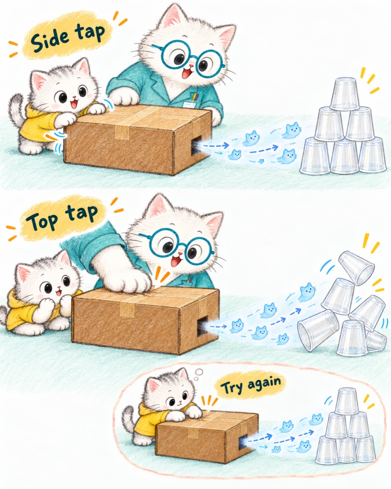
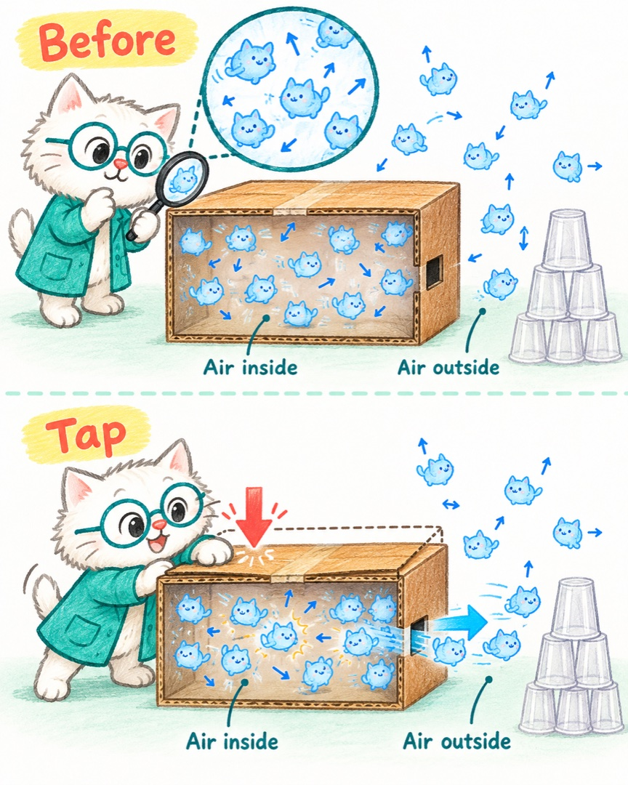
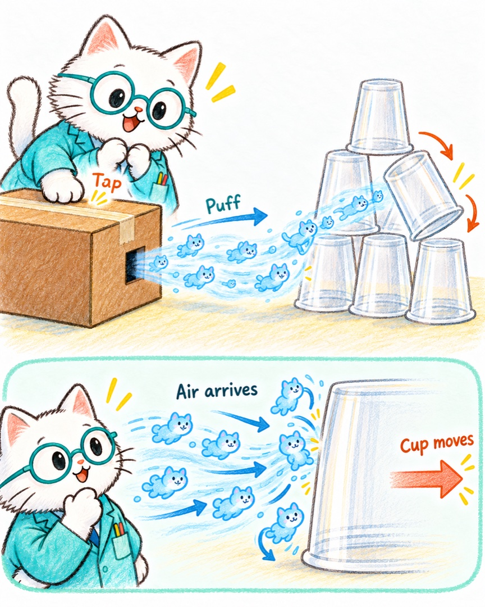
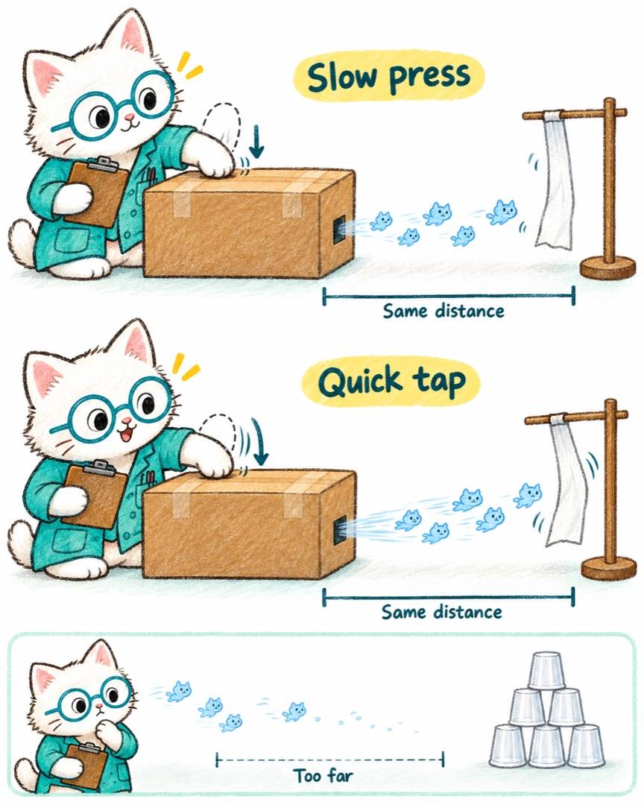

小猫解释万物 · 兔兔的问号 · 2026.10.22
空气大炮
是谁推倒了杯子？
在我们的世界里，那其实是一箱看不见的空气小猫，被箱壁猛地推了一下，又把这股推力带到了杯子那里。
手没有碰到城墙，城墙却倒了。兔兔，你造出了一条看不见的“推力接力路线”。
喵博士扶了扶眼镜：“先不急着解释。兔兔炮手，请你教教我，刚才是怎么发射的？”
01 / 先看见你的发现
换个地方拍，竟然更厉害了
今晚，你先拍箱子的两边。后来，家长拍了箱子上面。你发现：这次拍上面，杯子城墙被吹得更厉害！于是，你也试着拍上面。

喵博士记下两件不同的事：
已经看见的：这一次，拍上面的效果更强。
还要追踪的：是上面更容易凹进去？是拍得更快？还是炮口对得更准？
先跟着那股看不见的推力，钻进箱子里看看。
02 / 放大到看不见的地方
“空”箱子，其实并不空
箱子里住着许多极小的空气小猫。箱子外也有。它们一直朝不同方向运动，碰到同伴、碰到箱壁，再改换方向。
它们不是等到你拍才醒来，也没有谁在指挥它们排队。

啪！箱壁突然向里凹了一点。屋子一下变小，箱壁撞上附近的小猫，小猫又碰到旁边的小猫。
箱子其余地方大多封住了，这一下推挤，就把一部分空气小猫从小洞挤了出去。它们原本各自乱跑，现在又多了一股朝洞外涌出的整体运动。
“所以，炮弹不是凭空变出来的。”喵博士说，“它刚才就装在你的箱子里！”
03 / 回到杯子城墙
看不见，不等于推不动
冲出小洞的空气小猫，带着这一下向前涌去。到了杯子表面，它们撞上杯壁、改变方向，也把杯子往前推。

一只小猫的推力很小，许多小猫在短短一会儿里接连撞过来，就能让轻轻的杯子晃动、滑走或翻倒。杯墙中一个位置失去支撑，还可能带倒旁边和上面的杯子。
手推箱壁，箱壁推空气，空气推杯子。从你手里出发的那一下，终于到达了城墙。
不过，杯子太重、离得太远，或这股空气从旁边擦过去，城墙就不一定倒。杯子不动，也不等于没有空气小猫经过。
04 / 用发现，猜下一次
厉害的不是“上面”这个名字
空气小猫不认识“上面更厉害”这条规矩。它们受到多大的推挤，要看箱壁在多短的时间里，把屋子缩小了多少，也要看有没有从别的缝隙漏出去。
这只箱子的上面，也许更容易被你们拍得又快又凹；也可能是拍的人、用的力气或瞄准位置不同。今晚的发现是真的，原因还可以一起查。
喵博士提议：“先不比谁力气大。我们让同一个地方，来一次慢慢按，再来一次短促地拍，好不好？”

- 在炮口前挂一条轻薄纸巾。给箱子和纸巾的位置做记号，让炮口一直对准它。
- 同一个人、同一块箱面，尽量按到差不多的凹陷程度：一次慢慢按，一次短促地拍。每次等箱子恢复原样、纸条停下来。
- 交替试几次。先猜，再看：哪一次让纸条摆得更明显？也可以继续摆杯墙，但每次都摆回一样的位置。
喵博士的猜想是：差不多一批空气小猫，如果在更短的时间里涌出来，通常会形成更有劲的一阵冲击。慢慢按时，它们分散着出去，往往就没那么明显。
要是结果不一样，也别急着判自己错了。看看箱子有没有挪动、胶带缝有没有张开、这次是不是真的按到了差不多的位置。
只用轻空杯或纸条做目标，不朝人脸、耳朵或宠物发射；不用烟、火和粉末。轻拍够用，不追求把箱子拍坏。
留给陪玩的你：这一篇守住了哪些边界
沉默没有被解释成“不懂”或“害怕回答”。孩子已经做了尝试、比较、调整；先让他示范，再一起看不同结果，不把结尾变成背诵原理的测验。
机制骨架是箱壁短时内凹、挤出空气、气流作用于轻物体。空气大炮还常形成涡旋；圆孔短脉冲的气流可卷成向前运动的涡环。但照片里的孔近似不规则方孔，未观察流场，不能断言这只箱子发出了漂亮、稳定的圆形涡环。因此正文不把“完美甜甜圈”当必要条件，也不把涡环当固体炮弹。
今晚“拍上面更强”只有现场转述，没有同一操作者、力度、变形量、距离和方向的对照数据。顶部更易变形是候选解释，不是已验证结论。杯墙倒得多还受堆放稳定性影响；纸条仅作相对观察，不是精确测力计。
原理核对：日本机械学会流体工程部门 · Air Cannon（短时喷流与涡环）；Imagination Station · Air Vortex Cannon（纸箱与杯子实验）；Science Buddies · Build A Vortex Cannon（空气推动轻物与距离比较）。以上不构成这只纸箱顶部更强的证明。